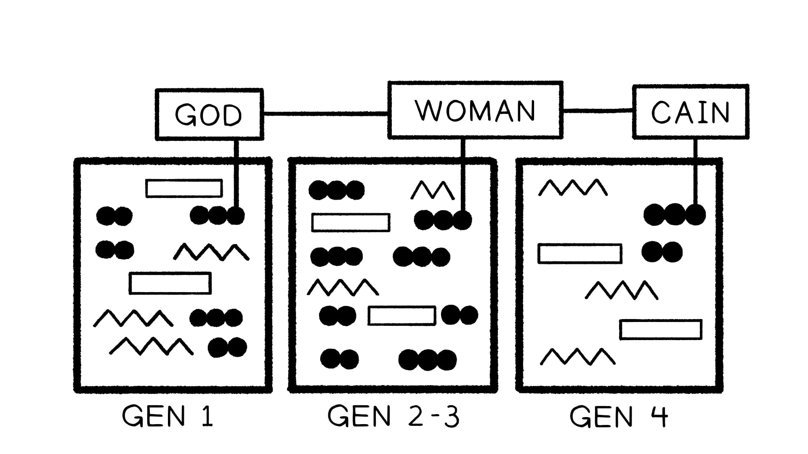

A analogia narrativa é «[q]uando dois ou mais personagens, histórias, cenas ou outros aspectos de um texto bíblico apresentam uma quantidade significativa de semelhança entre si, convidando a uma comparação mais detalhada entre os dois. A comparação lança nova luz sobre ambos os aspectos do texto, realçando paralelos, antecipação, inversão, progressão, ou vários outros efeitos gerados por sua semelhança e diferença mútuas. Por este recurso, para citar Robert Alter, “uma parte do texto fornece um comentário oblíquo sobre outra”. Narrative analogy is “[w]hen two or more characters, stories, scenes, or other aspects of a biblical text bear a significant amount of resemblance to one another, inviting further comparison between the two. The comparison sheds new light on both aspects of the text, highlighting parallels, foreshadowing, reversal, progression, or various other effects generated by their mutual resemblance and difference. Through this device, to quote Robert Alter, ‘one part of the text provides oblique commentary on another.’”
Sigmon, Brian (2013). Entre o Éden e o Egito: Ecos da Narrativa do Jardim na História de José e Seus Irmãos. Tese de Doutorado, Universidade Marquette. 46.Sigmon, Brian (2013). Between Eden and Egypt: Echoes of the Garden Narrative in the Story of Joseph and His Brothers. Doctoral Dissertation, Marquette University. 46.

Palavras Repetidas Ligando Diferentes Unidades Literárias. Ilustração criada por Tim Mackie para BibleProject Classroom: Introdução à Bíblia Hebraica (2019).Repeated Words Linking Different Literary Units. Illustration created by Tim Mackie for BibleProject Classroom: Introduction to the Hebrew Bible (2019).
Em termos do retrato do caráter de Deus, esta repetição faz uma afirmação clara: Deus é o provedor e o avaliador do que é verdadeiramente bom. Em Gênesis 1, “bom” define tanto os ambientes ordenados que tornam a vida possível (dias um a três) quanto as criaturas abundantes que enchem os céus e a terra (dias quatro a seis).In terms of God’s character portrait, this repetition makes a clear claim: God is the provider and evaluator of what is truly good. In Genesis 1, “good” defines both the ordered environments that make life possible (days one through three) and the abundant creatures that fill the skies and the land (days four through six).
Na próxima unidade literária, a narrativa do Éden (Gn 2:4-3:24), encontramos este mesmo vocabulário continuando, mas de maneiras novas e criativas.In the next literary unit, the Eden narrative (Gen. 2:4-3:24), we find this same vocabulary continued, but in new and creative ways.
Gênesis 2:9 Tradução do InstrutorGenesis 2:9 Instructor’s Translation
E o Deus Yahweh fez crescer toda árvore que era desejável para ver, e boa para comer, e a árvore da vida estava no meio do jardim e a árvore do conhecimento do bem e do mal.And Yahweh God caused the growth of every tree that was desirable to see, and good for eating, and the tree of life was in the middle of the garden and the tree of knowing of good and bad.
Gênesis 1 nos ensinou que Deus é o provedor, o avaliador e o supremo “conhecedor” do que é bom, e sabemos que ele designou os humanos para governar o mundo em seu nome como sua imagem divina. Os humanos têm uma escolha diante de si, simbolizada por duas árvores: uma representa a vida (que é boa), e a outra representa conhecer o bem e o mal. Permitirão os humanos que Deus seja o “conhecedor” primordial do que é bom e não-bom, ou eles tomarão esse conhecimento por si mesmos?Genesis 1 taught us that God is the provider, evaluator, and ultimate “knower” of what is good, and we know that he has appointed humans to rule the world on his behalf as his divine image. The humans have a choice before them, symbolized by two trees: one represents life (which is good), and the other represents knowing good and bad. Will the humans allow God to be the prime “knower” of what is good and not-good, or will they take this knowledge for themselves?
Gênesis 2:18 Tradução do InstrutorGenesis 2:18 Instructor’s Translation
Então o Deus Yahweh disse: “Não é bom que o humano esteja sozinho…”Then Yahweh God said, “It is not good for the human to be alone …”
Mais uma vez, Deus é o avaliador do que é bom e não bom (como em Gn 1), e mais uma vez ele fornece o que é bom para o humano: um parceiro sem o qual ele não pode cumprir a missão de imagem de Deus dada em Gênesis 1:26-28.Once again, God is the evaluator of what is good and not good (as in Gen. 1), and once again he provides what is good for the human: a partner without whom he cannot accomplish the image of God mission given in Genesis 1:26-28.
Gênesis 1:1-2:3 Tradução do InstrutorGenesis 1:1-2:3 Instructor’s Translation
10“… e Deus viu que era bom.”“… and God saw that it was good.”
12“… e Deus viu que era bom.”“… and God saw that it was good.”
18“… e Deus viu que era bom.”“… and God saw that it was good.”
31“… e Deus viu que era muito bom.”“… and God saw that it was very good.”
Gênesis 2:17-18 Tradução do InstrutorGenesis 2:17-18 Instructor’s Translation
17da árvore do conhecimento do bem e do mal não comerás…from the tree of knowing good and bad you shall not eat …
18“… não é bom que o humano esteja sozinho;”… it is not good for the human to be alone;”
| 3:1-53:1-5 | Tema: diálogo sobre o mandamento de Deus a respeito do fruto Personagens: serpente, mulher (ativa) Cenário: dentro do jardimTheme: dialogue about God’s command concerning the fruit Characters: snake, woman (active) Setting: inside the garden |
| Serpente: “Disse Deus realmente que não podeis comer de nenhuma árvore do jardim?” Mulher: “Do fruto da árvore no meio do jardim Deus disse: ‘Não comereis dela…’”Snake: “Did God really say you may not eat from any tree in the garden?” Woman: “From the fruit of the tree in the middle of the garden God said, ‘You shall not eat from it …’” |
|
| 3:6-73:6-7 | Tema: a mulher e o homem comem o fruto e são mudados Personagens: a mulher e o marido Cenário: o centro do jardimTheme: the woman and man eat the fruit and are changed Characters: the woman and the husband Setting: the center of the garden |
| A E a mulher viu que a árvore era boa para comer B e desejável aos olhos e desejável para tornar-se sábiaA And the woman saw that the tree was good for eating B and desirable to the eyes and desirable for becoming wise |
|
| C e ela tomou do seu fruto e ela comeu C’ e ela deu também a seu marido e ele comeu. B’ E os olhos de ambos se abriram e souberam que estavam nus. A’ E coseram folhas de figueira e fizeram vestes.C and she took from its fruit and she ate C’ and she gave also to her husband and he ate. B’ And the eyes of the two of them were opened and they knew they were naked. A’ and they sewed the leaves of a fig tree and made garments. |
|
| 3:8-133:8-13 | Tema: diálogo sobre o comer do fruto Personagens: Yahweh, ha’adam, a mulher Cenário: dentro do jardimTheme: dialogue about the eating of the fruit Characters: Yahweh, ha’adam, the woman Setting: inside the garden |
| Yahweh: “Comeste da árvore da qual eu te ordenei não comesses dela?” Mulher: “A serpente me enganou, e comi dela.”Yahweh: “Did you eat from the tree which I commanded you not to eat from it? ” Woman: “The snake deceived me, and I ate from it.” |
“Bom” em Gênesis 3. Criado por Tim Mackie para BibleProject Classroom: Introdução à Bíblia Hebraica (2019).“Good” in Genesis 3. Created by Tim Mackie for BibleProject Classroom: Introduction to the Hebrew Bible (2019).
Esta história é a tragédia suprema porque a serpente se apresenta como alguém com conhecimento superior sobre o conhecimento de Deus. Ela contradiz a sabedoria de Deus, dizendo que tomar o conhecimento do bem e do mal não levará à morte, mas a uma sabedoria maior.This story is the ultimate tragedy because the snake presents itself as one with superior knowledge about God’s knowledge. He contradicts God’s wisdom, saying that taking the knowing of good and bad will not lead to death but to greater wisdom.
A frase-chave “e a mulher viu ... bom” é precisamente a mesma frase que foi repetida sete vezes em Gênesis 1. Eva é retratada como alguém que usurpa o papel e a prerrogativa de Deus. Note que o que Deus viu como bom, ele “deu”, enquanto o que a mulher viu como bom, ela “tomou”.The key phrase “and the woman saw ... good” is precisely the same phrase that was repeated seven times in Genesis 1. Eve is portrayed as one who usurps the role and prerogative of God. Note that what God saw as good, he “gave,” whereas what the woman saw as good, she “took.”
O perfil das ações de Adão e Eva em Gênesis 3 é um modelo para a próxima geração, que repete o fracasso de seus pais. O fracasso de Caim em Gênesis 4 é deliberadamente colocado em analogia com a história de Gênesis 3 e usa todo o seu vocabulário-chave.The profile of Adam and Eve’s actions in Genesis 3 is a template for the next generation, who replays the failure of their parents. The failure of Cain in Genesis 4 is deliberately set on analogy to the story of Genesis 3 and uses all of its key vocabulary.
| AnalogiaAnalogy | Gênesis 2-3: Adão e EvaGenesis 2-3: Adam and Eve | Gênesis 4: Caim e AbelGenesis 4: Cain and Abel |
|---|---|---|
| Humano recebe uma escolha significativa sobre o “bom”Human given a significant choice about “good” | 2:16-17: “De qualquer árvore do jardim podes comer, mas da árvore do conhecimento do bem e do mal não deves comer, porque no dia em que dela comeres, certamente morrerás.”2:16-17: “From any tree of the garden you may eat, but from the tree of knowing good and evil you should not eat, because the day you eat from it you will surely die.” | 4:5-7: Mas Yahweh não viu a oferta de Caim, e Caim ficou muito irado… Yahweh disse “Porque estás irado, e por que caiu o teu rosto? Não é o caso de que, se fizeres o bem, serás exaltado?”4:5-7: But Yahweh did not regard Cain’s offering, and Cain was very angry … Yahweh said “Why are you angry, and why has your face fallen? Isn’t it the case that if you do good , you will be lifted up?” |
| Humano tentado por um “animal”Human tempted by an “animal” | 3:1: Ora, a serpente era mais astuta que qualquer criatura do campo… e disse à mulher: “Será que Deus realmente disse que não comesses de nenhuma árvore do jardim?”3:1: Now the snake was more crafty than any creature of the field … and he said to the woman, “Did God really say not to eat from any tree in the garden?” | 4:7: “Mas se não fizeres o bem, o pecado é um agachado à porta, e o seu desejo é por ti.”4:7: “But if you don’t do good , sin is a croucher at the door , and it’s desire is for you.” |
| Humano cede à tentação com consequências destrutivasHuman gives into temptation with destructive consequences | 3:6: Quando a mulher viu que a árvore era boa para alimento, e desejável aos olhos, e desejável para ganhar sabedoria… ela tomou3:6: When the woman saw that the tree was good for food, and desirable to the eyes, and desirable for gaining wisdom … she took | 4:5: E Caim ficou muito irado 4:8 E Caim falou com Abel, seu irmão, e enquanto estavam no campo, Caim se levantou contra Abel, seu irmão, e o matou.4:5: And Cain was very angry 4:8 And Cain spoke to Abel his brother and while they were in the field Cain rose up against Abel his brother and murdered him. |
| Deus aparece para fazer uma pergunta que conduzGod shows up to ask a leading question | 3:9: E Deus chamou o humano, e disse: “Onde estás (איכה)?” 3:13: E Deus disse à mulher, “Que fizeste?” (מה עשית)3:9: And God called out to the human, and said, “Where are you (איכה)?” 3:13: And God said to the woman, “What have you done?” (מה עשית) |
4:9: E Deus disse a Caim, “Onde está teu irmão Abel?” (אי) 4:10 E Deus disse, “Que fizeste?” (מה עשית)4:9: And God said to Cain, “Where is your (אי) brother Abel?” 4:10 And God said, “What have you done?” (מה עשית) |
| Humano desvia a perguntaHuman dodges the question | 3:12: O humano disse: “A mulher que puseste comigo, ela me deu e eu comi.”3:12: The human said, “The woman who you set with me, she gave to me and I ate.” | 4:9: “Não sei! Sou eu o guarda do meu irmão?”4:9: “I don’t know! Am I my brother’s keeper?” |
| O perpetrators é amaldiçoadoThe perpetrator is cursed | 3:14: Deus disse à serpente: “Como fizeste isto, és amaldiçoada de todo animal e de toda criatura do campo.”3:14: God said to the serpent, “Because you have done this, you are cursed from every beast and from every creature of the field.” | 4:11: “E agora és amaldiçoado desde a terra”4:11: “And now you are cursed from the ground” |
| Desejo invertidoInverted desire | 3:16: “Teu desejo será para teu marido, e ele te governará.”3:16: “Your desire will be toward your husband, and he will rule over you.” | 4:7: “O pecado… o seu desejo é para ti, e tu o governarás.”4:7: “Sin … its desire is toward you, and you will rule it.” |
| Trabalhar a terra será agora mais difícilWorking the ground will now be more difficult | 3:17b: “em dor comerás da terra ” 3:23: E Deus o enviou do jardim do Éden para trabalhar a terra3:17b: “in pain you will eat from the ground ” 3:23: And God sent him from the garden of Eden to work the ground |
4:12: “Pois trabalharás a terra, e ela não dará mais sua força a ti.”4:12: “For you will work the ground , and it will no longer give its strength to you.” |
| O humano é banido da presença divinaThe human is banished from the divine presence | 3:23-24: E [Deus] baniu o humano e acampou a leste do jardim do Éden3:23-24: And [God] banished the human and he camped east of the garden of Eden | 4:14: “Eis que me baniste da face da terra e da tua presença.” 4:16 E Caim habitou na terra de Node, a leste do Éden.4:14: “Behold, you have banished me from the face of the ground and from your presence.” 4:16 And Cain settled in the land of Nod, east of Eden . |
Palavras-Chave ao Longo de Gênesis 3 e 4. Criado por Tim Mackie para BibleProject Classroom: Introdução à Bíblia Hebraica (2019).Lead Words Through Genesis 3 and 4. Created by Tim Mackie for BibleProject Classroom: Introduction to the Hebrew Bible (2019).
Observe que em cada elemento paralelo, o leitor é convidado a fazer comparações e contrastes entre as duas histórias que oferecem insight sobre o caráter de Caim.Notice that in each parallel element, the reader is invited to make comparisons and contrasts between the two stories that offer insight into Cain’s character.
Em ambas as histórias, o “testador” é apresentado como um animal — é uma serpente em Gênesis 3, e em Gênesis 4 o “pecado” é animado como um “agachado,” uma realidade semelhante a um animal que quer tomar a vida dos outros para si.In both stories, the “tester” is presented as an animal—it’s a snake in Genesis 3, and in Genesis 4 “sin” is animated as a “croucher,” an animal-like reality that wants to take the lives of others for its own.
Gênesis 3 e 4 “foram propositalmente justapostos pelo efeito que teriam no início da sequência de episódios primevos do Éden à Torre de Babel… O primeiro humano é sondado dentro do jardim, enquanto Caim é testado fora do jardim. O primeiro teste é o do primeiro humano que é advertido a não comer… para que não morra. O segundo teste é o de seu filho Caim que é exortado a governar sobre o pecado, para que seu irmão não morra… O primeiro testador é uma serpente misteriosa, o segundo é um personagem animado chamado ‘pecado’. Enquanto o homem e a mulher compartilham a responsabilidade… Caim sozinho é culpado por seu crime.” Genesis 3 and 4 “were purposely juxtaposed for the effect they would have early on in the sequence of primeval episodes from Eden to the Tower of Babel … The first human is probed within the garden, while Cain is tested outside the garden. The first test is that of the first human who is warned not to eat … lest he die. The second test is that of his son Cain who is admonished to rule over sin, so that his brother doesn’t die … The first tester is a mysterious snake, the second is an animated character called ‘sin.’ While the man and woman share responsibility … Cain alone is guilty for his crime.”
German, Igal (2016). A Queda Reconsiderada: Uma Síntese Literária das Narrativas Primevas do Pecado. Pickwick Publications. 4.German, Igal (2016). The Fall Reconsidered: A Literary Synthesis of the Primeval Sin Narratives. Pickwick Publications. 4.
Resumo de “Bom” em Gênesis 1-4. Criado por Tim Mackie para BibleProject Classroom: Introdução à Bíblia Hebraica (2019).Summary of “Good” in Genesis 1-4. Created by Tim Mackie for BibleProject Classroom: Introduction to the Hebrew Bible (2019).
Falamos sobre a palavra repetida “bom” algumas sessões atrás também. Resuma o que você aprendeu sobre como o autor usa a palavra “bom” para estabelecer a história da Bíblia.We talked about the repeated word “good” a few sessions ago as well. Summarize what you've learned about how the author uses the word "good" to set up the story of the Bible.